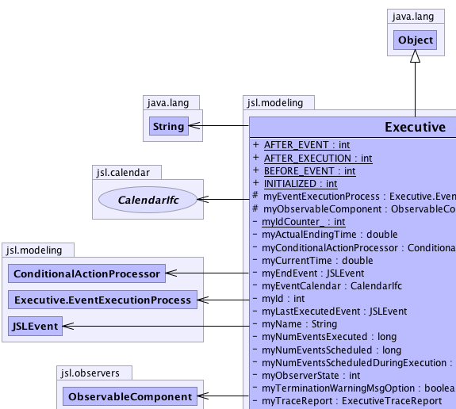
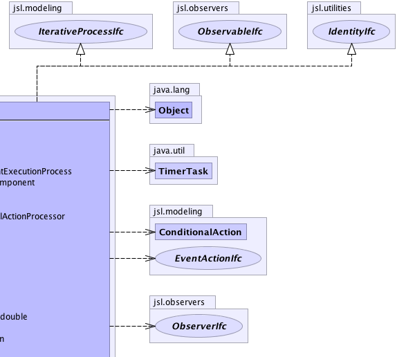
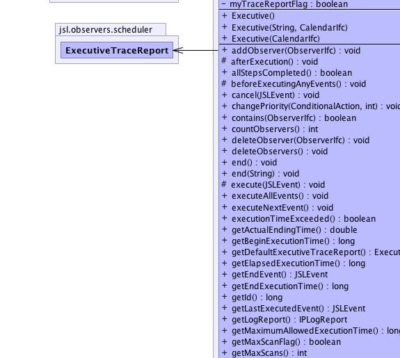
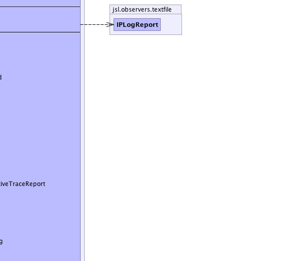
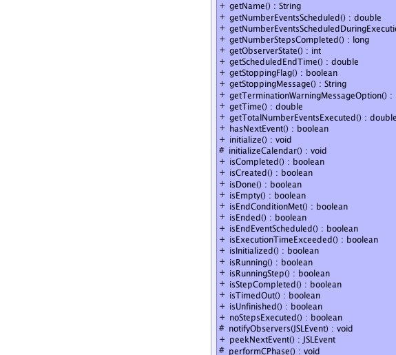
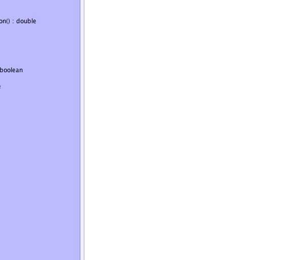
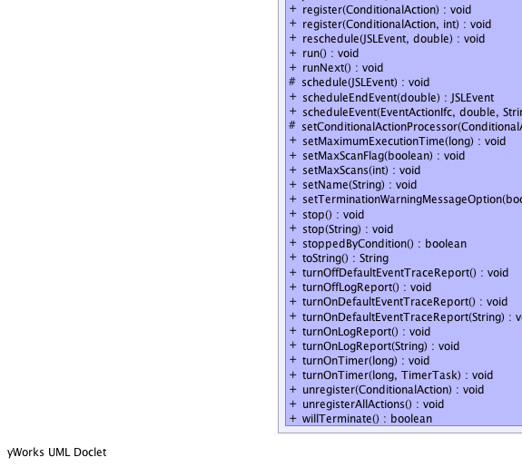
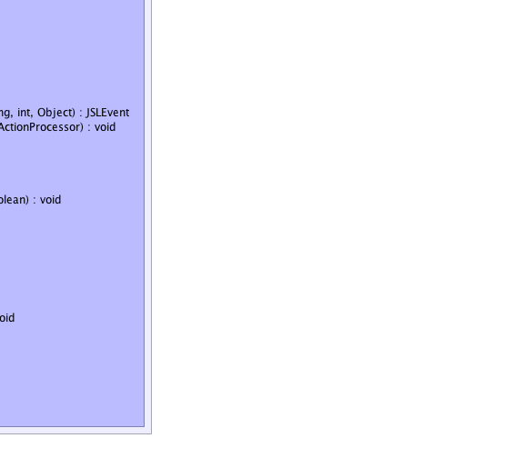

jsl.modeling.Executive
jsl.modeling.Executive
|
||||||||||
| PREV CLASS NEXT CLASS | FRAMES NO FRAMES | |||||||||
| SUMMARY: NESTED | FIELD | CONSTR | METHOD | DETAIL: FIELD | CONSTR | METHOD | |||||||||
java.lang.Object
public class Executive
The Executive controls the execution of events, permits the scheduling of events, updates the current time, and manages conditional actions. The Executive uses an instance of a class that extends IterativeProcess to control its execution. The Executive uses an instance of a class that implements the CalendarIfc interface to manage the time ordered execution of events. The Executive uses an instance of a ConditionalActionProcessor to manage the execution of ConditionalActions. The event calendar and attached conditional actions are cleared after the initialize() method is called The Executive can be pre-loaded with events and conditional actions prior to invoking the run() method if and only if the initialize() method had already been called. If the run() method is called without calling initialize() the calendar and conditional actions are cleared. If an ending event is not scheduled using the scheduleEndEvent() method and no real clock time execution limit has been set, then a default message will be sent to JSL.LOGGER.warning(). This message can be turned off by calling setTerminationWarningMessageOption(false)
|  |  |
|  |  |
|  |  |
|  |  |
| Nested Class Summary | |
|---|---|
private class |
Executive.EndEventActionListener
|
protected class |
Executive.EventExecutionProcess
|
| Field Summary | |
|---|---|
static int |
AFTER_EVENT
Used to indicate to observers that an event will be executed |
static int |
AFTER_EXECUTION
Used when observers are notified after all events are executed |
static int |
BEFORE_EVENT
Used to indicate to observers that an event will be executed |
static int |
INITIALIZED
Used when observers are notified of initialization |
private double |
myActualEndingTime
The time that the executive actually ended. |
private ConditionalActionProcessor |
myConditionalActionProcessor
Provides for 3 phase method for conditional events |
private double |
myCurrentTime
The current simulated time |
private JSLEvent |
myEndEvent
The event that represents the end of the event processing |
private CalendarIfc |
myEventCalendar
The reference to the event calendar |
protected Executive.EventExecutionProcess |
myEventExecutionProcess
Controls the execution of events over time |
private int |
myId
The id of this object |
private static int |
myIdCounter_
A counter to count the number of objects created to assign "unique" ids |
private JSLEvent |
myLastExecutedEvent
A reference to the event that just executed |
private java.lang.String |
myName
The name of this object |
private long |
myNumEventsExecuted
A counter that tracks the number of event executed |
private long |
myNumEventsScheduled
A counter that tracks the number of events that have been scheduled |
private double |
myNumEventsScheduledDuringExecution
Records the number of events scheduled during the execution |
protected ObservableComponent |
myObservableComponent
Allows the object to be observed |
private int |
myObserverState
Keeps track of the status for observers |
private boolean |
myTerminationWarningMsgOption
A flag to control whether or not a warning is issues if the user does not set the end event |
private ExecutiveTraceReport |
myTraceReport
A reference to a tracing report |
private boolean |
myTraceReportFlag
A flag to indicate that the scheduler is to be traced |
| Constructor Summary | |
|---|---|
Executive()
|
|
Executive(CalendarIfc c)
|
|
Executive(java.lang.String name,
CalendarIfc c)
|
|
| Method Summary | |
|---|---|
void |
addObserver(ObserverIfc observer)
Allows the adding (attaching) of an observer to the observable |
protected void |
afterExecution()
This method is called after executing all events when ending the iterative process. |
boolean |
allStepsCompleted()
The iterative process may end by a variety of means, this method checks if the iterative process ended because it ran all of its steps |
protected void |
beforeExecutingAnyEvents()
This method is called before any events are executed and after initializing the iterative process. |
void |
cancel(JSLEvent e)
Tells the event calendar to cancel the provided event. |
void |
changePriority(ConditionalAction action,
int priority)
|
boolean |
contains(ObserverIfc observer)
Returns true if the observer is already attached |
int |
countObservers()
Returns how many observers are currently observing the observable |
void |
deleteObserver(ObserverIfc observer)
Allows the deletion (removing) of an observer from the observable |
void |
deleteObservers()
Deletes all the observers from the observable |
void |
end()
The iterative process will continue until there are no more steps or its maximum execution time has been reached, whichever comes first. |
void |
end(java.lang.String msg)
The iterative process will continue until there are no more steps or its maximum execution time has been reached, whichever comes first. |
protected void |
execute(JSLEvent event)
Executes the provided event |
void |
executeAllEvents()
|
void |
executeNextEvent()
Causes the next event to be executed if it exists |
boolean |
executionTimeExceeded()
The iterative process may end by a variety of means, this method checks if the iterative process ended because it timed out |
double |
getActualEndingTime()
The simulated time that the Executive actually ended |
long |
getBeginExecutionTime()
Returns system time in milliseconds that the iterative process started |
ExecutiveTraceReport |
getDefaultExecutiveTraceReport()
Returns the default event trace report or null if it has not yet been turned on. |
long |
getElapsedExecutionTime()
Gets the clock time in milliseconds since the iterative process was initialized |
JSLEvent |
getEndEvent()
Returns the Executive's end event if scheduled |
long |
getEndExecutionTime()
Returns system time in milliseconds that the iterative process ended |
long |
getId()
Returns the id for this object |
JSLEvent |
getLastExecutedEvent()
Returns a reference to the last executed event or null if no events have been executed or no more events |
IPLogReport |
getLogReport()
Returns a reference to the current log report. |
long |
getMaximumAllowedExecutionTime()
Returns maximum (real) clock time allocated for the iterative process |
boolean |
getMaxScanFlag()
|
int |
getMaxScans()
|
java.lang.String |
getName()
Gets the name. |
double |
getNumberEventsScheduled()
Gets the number of events currently scheduled |
double |
getNumberEventsScheduledDuringExecution()
Gets the number of events that were scheduled during the execution |
long |
getNumberStepsCompleted()
Returns the number of steps completed since the iterative process was last initialized |
int |
getObserverState()
Can be used by observers to check what occurred |
double |
getScheduledEndTime()
Returns the time the execution was scheduled to end |
boolean |
getStoppingFlag()
Returns the stopping flag |
java.lang.String |
getStoppingMessage()
A string message for why stop() was called. |
boolean |
getTerminationWarningMessageOption()
|
double |
getTime()
Returns the current simulated time as a double |
double |
getTotalNumberEventsExecuted()
Gets the total number of events executed |
boolean |
hasNextEvent()
Checks to see if the event calendar has another event |
void |
initialize()
Initialize the executive, making it ready to run events This clears any events in the calendar and prepares for execution |
protected void |
initializeCalendar()
Tells the event calendar to clear all the events. |
boolean |
isCompleted()
|
boolean |
isCreated()
Checks if the iterative process is in the created state. |
boolean |
isDone()
A flag to indicate whether the iterative process is done A iterative process can be done if: 1) it ran all of its steps 2) it was ended by a client prior to completing all of its steps 3) it ended because it exceeded its maximum allowable execution time before completing all of its steps. 4) its end condition was satisfied |
boolean |
isEmpty()
Allows a check of the event calendar to see if it is empty, i.e. it does not have any more events. |
boolean |
isEndConditionMet()
|
boolean |
isEnded()
Checks if the iterative process is in the ended state After the iterative process has been ended this method will return true |
boolean |
isEndEventScheduled()
Returns true if an event has been scheduled to stop execution at getTimeHorizon() |
boolean |
isExecutionTimeExceeded()
Returns if the elapsed execution time exceeds the maximum time allowed. |
boolean |
isInitialized()
Checks if the iterative process is in the initialized state After the iterative process has been initialized this method will return true |
boolean |
isRunning()
An iterative process is running if it is been told to run (i.e. |
boolean |
isRunningStep()
Indicates that the iterative process is currently running an individual step |
boolean |
isStepCompleted()
Checks if the iterative process is in the completed step state After the iterative process has successfully completed a step this method will return true |
boolean |
isTimedOut()
|
boolean |
isUnfinished()
The iterative process may end by a variety of means, this method checks if the iterative process ended but was unfinished, not all steps completed |
boolean |
noStepsExecuted()
Indicates that the iterative process ended because of no steps |
protected void |
notifyObservers(JSLEvent e)
|
JSLEvent |
peekNextEvent()
Returns a reference to the next event or null if no event exists. |
protected void |
performCPhase()
|
void |
register(ConditionalAction action)
|
void |
register(ConditionalAction action,
int priority)
|
void |
reschedule(JSLEvent event,
double time)
This method allows a previously *executed* event to be reused The event must have already been removed from the calendar through the natural execute event mechanism and have been executed. |
void |
run()
Runs all of the steps of the iterative process. |
void |
runNext()
Runs the next step in the iterative process |
protected void |
schedule(JSLEvent e)
|
JSLEvent |
scheduleEndEvent(double time)
Schedules the ending of the executive at the provided time |
JSLEvent |
scheduleEvent(EventActionIfc listener,
double time,
java.lang.String name,
int priority,
java.lang.Object message)
Creates an event and schedules it onto the event calendar |
protected void |
setConditionalActionProcessor(ConditionalActionProcessor p)
|
void |
setMaximumExecutionTime(long milliseconds)
Set the maximum allotted (suggested) execution (real) clock for the entire iterative process. |
void |
setMaxScanFlag(boolean flag)
|
void |
setMaxScans(int max)
|
void |
setName(java.lang.String str)
Sets the name |
void |
setTerminationWarningMessageOption(boolean flag)
False turns off the message |
void |
stop()
This sets a flag to indicate to the process that is should stop after the next step is completed. |
void |
stop(java.lang.String msg)
This sets a flag to indicate to the process that is should stop after the next step is completed. |
boolean |
stoppedByCondition()
The iterative process may end by a variety of means, this method checks if the iterative process ended because it was stopped |
java.lang.String |
toString()
|
void |
turnOffDefaultEventTraceReport()
Removes the default ExecutiveTraceReport as an observer of the Executive and sets it to null. |
void |
turnOffLogReport()
Turns off log reporting. |
void |
turnOnDefaultEventTraceReport()
This method creates an instance of the default ExecutiveTraceReport and tells it to observe the scheduler. |
void |
turnOnDefaultEventTraceReport(java.lang.String name)
This method creates an instance of the default ExecutiveTraceReport and tells it to observe the scheduler. |
void |
turnOnLogReport()
Turns on the log report. |
void |
turnOnLogReport(java.lang.String name)
Turns on the log report. |
void |
turnOnTimer(long milliseconds)
This method will cause the a timer to start allowing a TimerTask to be scheduled. |
void |
turnOnTimer(long milliseconds,
java.util.TimerTask timerTask)
This method will cause the a timer to start allowing a TimerTask to be scheduled. |
void |
unregister(ConditionalAction action)
|
void |
unregisterAllActions()
|
boolean |
willTerminate()
If the Executive has an end event or maximum allowed execution time, then return true |
| Methods inherited from class java.lang.Object |
|---|
clone, equals, finalize, getClass, hashCode, notify, notifyAll, wait, wait, wait |
| Field Detail |
|---|
public static final int AFTER_EXECUTION
public static final int INITIALIZED
public static final int BEFORE_EVENT
public static final int AFTER_EVENT
private int myObserverState
private static int myIdCounter_
private java.lang.String myName
private int myId
private CalendarIfc myEventCalendar
private double myCurrentTime
private JSLEvent myLastExecutedEvent
private long myNumEventsScheduled
private double myNumEventsScheduledDuringExecution
private long myNumEventsExecuted
protected ObservableComponent myObservableComponent
protected Executive.EventExecutionProcess myEventExecutionProcess
private ConditionalActionProcessor myConditionalActionProcessor
private JSLEvent myEndEvent
private double myActualEndingTime
private boolean myTraceReportFlag
private ExecutiveTraceReport myTraceReport
private boolean myTerminationWarningMsgOption
| Constructor Detail |
|---|
public Executive()
public Executive(CalendarIfc c)
public Executive(java.lang.String name,
CalendarIfc c)
| Method Detail |
|---|
public final java.lang.String getName()
getName in interface IdentityIfcpublic final long getId()
getId in interface IdentityIfcpublic final void setName(java.lang.String str)
setName in interface IterativeProcessIfcstr - The name as a string.public final boolean getTerminationWarningMessageOption()
public final void setTerminationWarningMessageOption(boolean flag)
flag - public final int getObserverState()
public final void deleteObservers()
ObservableIfc
deleteObservers in interface ObservableIfcpublic final void deleteObserver(ObserverIfc observer)
ObservableIfc
deleteObserver in interface ObservableIfcpublic final int countObservers()
ObservableIfc
countObservers in interface ObservableIfcpublic final void addObserver(ObserverIfc observer)
ObservableIfc
addObserver in interface ObservableIfcpublic boolean contains(ObserverIfc observer)
ObservableIfc
contains in interface ObservableIfcpublic void turnOnLogReport(java.lang.String name)
IterativeProcessIfc
turnOnLogReport in interface IterativeProcessIfcname - specifies a prefix name for the reportpublic final void turnOnLogReport()
IterativeProcessIfc
turnOnLogReport in interface IterativeProcessIfcpublic void turnOffLogReport()
IterativeProcessIfc
turnOffLogReport in interface IterativeProcessIfcprotected final void notifyObservers(JSLEvent e)
public final double getScheduledEndTime()
public final void reschedule(JSLEvent event,
double time)
event - The event that needs reschedulingtime - represents the inter-event time, i.e. the interval from the
current time to when the event will need to occur
public final JSLEvent scheduleEvent(EventActionIfc listener,
double time,
java.lang.String name,
int priority,
java.lang.Object message)
listener - represents an ActionListener that will handle the change
of state logictime - represents the inter-event time, i.e. the interval from the
current time to when the event will need to occurname - priority - is used to influence the ordering of eventsmessage - is a generic Object that may represent data to be
transmitted with the event
public final void cancel(JSLEvent e)
e - A reference to the event to be canceled.public final boolean isEmpty()
public final double getTime()
public java.lang.String toString()
toString in class java.lang.Objectpublic final double getNumberEventsScheduled()
public final double getNumberEventsScheduledDuringExecution()
public final double getTotalNumberEventsExecuted()
public double getActualEndingTime()
public final boolean isEndEventScheduled()
public final boolean hasNextEvent()
public final JSLEvent peekNextEvent()
public final JSLEvent getLastExecutedEvent()
public final void initialize()
initialize in interface IterativeProcessIfcpublic final void executeNextEvent()
public final void executeAllEvents()
public final void end()
IterativeProcessIfc
end in interface IterativeProcessIfcpublic final void end(java.lang.String msg)
IterativeProcessIfc
end in interface IterativeProcessIfcmsg - an option message to indicate the reason for stoppingpublic final boolean isUnfinished()
IterativeProcessIfc
isUnfinished in interface IterativeProcessIfcpublic final boolean isTimedOut()
public final boolean isStepCompleted()
IterativeProcessIfc
isStepCompleted in interface IterativeProcessIfcpublic final boolean isRunning()
IterativeProcessIfc
isRunning in interface IterativeProcessIfcpublic final boolean isInitialized()
IterativeProcessIfc
isInitialized in interface IterativeProcessIfcpublic final boolean isCreated()
IterativeProcessIfc
isCreated in interface IterativeProcessIfcpublic final boolean isEnded()
IterativeProcessIfc
isEnded in interface IterativeProcessIfcpublic final boolean isEndConditionMet()
public final boolean isDone()
IterativeProcessIfc
isDone in interface IterativeProcessIfcpublic final boolean isCompleted()
public final long getMaximumAllowedExecutionTime()
IterativeProcessIfc
getMaximumAllowedExecutionTime in interface IterativeProcessIfcpublic final void setMaximumExecutionTime(long milliseconds)
IterativeProcessIfc
setMaximumExecutionTime in interface IterativeProcessIfcpublic final long getEndExecutionTime()
IterativeProcessIfc
getEndExecutionTime in interface IterativeProcessIfcpublic final long getElapsedExecutionTime()
IterativeProcessIfc
getElapsedExecutionTime in interface IterativeProcessIfcpublic final long getBeginExecutionTime()
IterativeProcessIfc
getBeginExecutionTime in interface IterativeProcessIfcpublic final java.lang.String getStoppingMessage()
IterativeProcessIfc
getStoppingMessage in interface IterativeProcessIfcpublic final void turnOnDefaultEventTraceReport()
public final void turnOnDefaultEventTraceReport(java.lang.String name)
name - specifies a prefix name for the reportpublic final void turnOffDefaultEventTraceReport()
public final ExecutiveTraceReport getDefaultExecutiveTraceReport()
public final void unregisterAllActions()
public void unregister(ConditionalAction action)
public final void setMaxScans(int max)
public final void setMaxScanFlag(boolean flag)
public final void register(ConditionalAction action,
int priority)
public final void register(ConditionalAction action)
public final int getMaxScans()
public final boolean getMaxScanFlag()
public final void changePriority(ConditionalAction action,
int priority)
public final void stop()
IterativeProcessIfc
stop in interface IterativeProcessIfcpublic final void stop(java.lang.String msg)
IterativeProcessIfc
stop in interface IterativeProcessIfcmsg - A string to represent the reason for the stoppingprotected void execute(JSLEvent event)
event - represents the next event to execute or nullprotected void performCPhase()
protected void setConditionalActionProcessor(ConditionalActionProcessor p)
protected void schedule(JSLEvent e)
public final JSLEvent scheduleEndEvent(double time)
time - the time of the ending event, must be > 0
public final JSLEvent getEndEvent()
public boolean isExecutionTimeExceeded()
IterativeProcessIfc
isExecutionTimeExceeded in interface IterativeProcessIfcpublic long getNumberStepsCompleted()
IterativeProcessIfc
getNumberStepsCompleted in interface IterativeProcessIfcpublic IPLogReport getLogReport()
IterativeProcessIfc
getLogReport in interface IterativeProcessIfcpublic void turnOnTimer(long milliseconds)
IterativeProcessIfc
turnOnTimer in interface IterativeProcessIfc
public void turnOnTimer(long milliseconds,
java.util.TimerTask timerTask)
IterativeProcessIfc
turnOnTimer in interface IterativeProcessIfcpublic boolean allStepsCompleted()
IterativeProcessIfc
allStepsCompleted in interface IterativeProcessIfcpublic boolean executionTimeExceeded()
IterativeProcessIfc
executionTimeExceeded in interface IterativeProcessIfcpublic boolean stoppedByCondition()
IterativeProcessIfc
stoppedByCondition in interface IterativeProcessIfcpublic void runNext()
IterativeProcessIfc
runNext in interface IterativeProcessIfcpublic void run()
IterativeProcessIfc
run in interface IterativeProcessIfcpublic boolean getStoppingFlag()
IterativeProcessIfc
getStoppingFlag in interface IterativeProcessIfcpublic boolean isRunningStep()
IterativeProcessIfc
isRunningStep in interface IterativeProcessIfcpublic boolean noStepsExecuted()
IterativeProcessIfc
noStepsExecuted in interface IterativeProcessIfcprotected void beforeExecutingAnyEvents()
protected void afterExecution()
protected void initializeCalendar()
public final boolean willTerminate()
|
||||||||||
| PREV CLASS NEXT CLASS | FRAMES NO FRAMES | |||||||||
| SUMMARY: NESTED | FIELD | CONSTR | METHOD | DETAIL: FIELD | CONSTR | METHOD | |||||||||